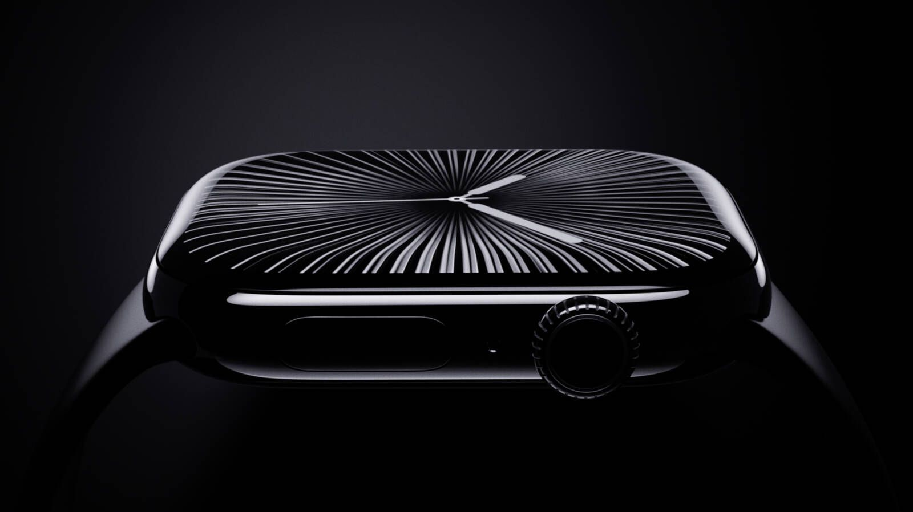

Apple Watch SE
The entry-level model covers core features — fitness tracking, heart rate monitoring, crash detection, and notifications — at a lower price, omitting advanced sensors like ECG and blood oxygen.
The smart wearable redefining health and connectivity

The Apple Watch is Apple's wrist-worn smart device that goes far beyond telling the time — combining advanced health sensors, fitness tracking, real-time notifications, and communication tools in a compact wearable that has become one of the most widely adopted consumer devices in the world.
The Apple Watch merges medical-grade health monitoring with everyday convenience — functioning as an independent health tracker, fitness coach, communication hub, contactless payment terminal, and safety device capable of detecting falls, car crashes, and irregular heart rhythms all from your wrist.

The entry-level model covers core features — fitness tracking, heart rate monitoring, crash detection, and notifications — at a lower price, omitting advanced sensors like ECG and blood oxygen.
The standard premium experience: full sensor suite with ECG, blood oxygen, skin temperature, an always-on Retina display, and advanced workout detection for all-day use.
Built for extreme environments — titanium case, 3000-nit display, dual-frequency GPS, depth gauge, emergency siren, and significantly longer battery life for athletes and outdoor professionals.
The Apple Watch runs on Apple's custom S9 SiP — a dual-core CPU and four-core Neural Engine packed into a single module — enabling on-device Siri, Double Tap gesture recognition, and real-time health analysis without depending on the paired iPhone. Sensors include an optical heart rate monitor, ECG electrode, blood oxygen sensor, skin temperature sensor, barometric altimeter, high-g accelerometer, and gyroscope.
Displays use LTPO OLED with dynamic refresh rates to save power, while the Ultra pushes to 3000 nits for direct-sunlight readability. Connectivity spans Wi-Fi, Bluetooth 5.3, optional LTE for fully independent use, and Ultra Wideband for Precision Finding — all in a device small enough to forget you're wearing it.
watchOS is purpose-built for wrist interaction — managing watch faces, health dashboards, fitness rings, Siri, and app navigation. The Activity Rings system (Move, Exercise, Stand) has become one of the most effective behaviour-change tools in consumer health tech, motivating daily physical activity through a simple, glanceable visual.
Safety and health run deep: Fall Detection and Crash Detection automatically contact emergency services, ECG monitoring flags atrial fibrillation, and blood oxygen + sleep tracking provide continuous physiological insight. Thousands of standalone watch apps — from navigation to smart home control — make the Watch a genuinely independent wrist computer.
The Apple Watch proves wearables can transcend novelty and become essential health and safety infrastructure. It reflects the shift toward ambient computing — devices that become smaller, more personal, and more body-integrated, adapting to the user rather than requiring the user to adapt to the device. As sensors advance, it is positioned to expand further into medical diagnostics and preventive health.